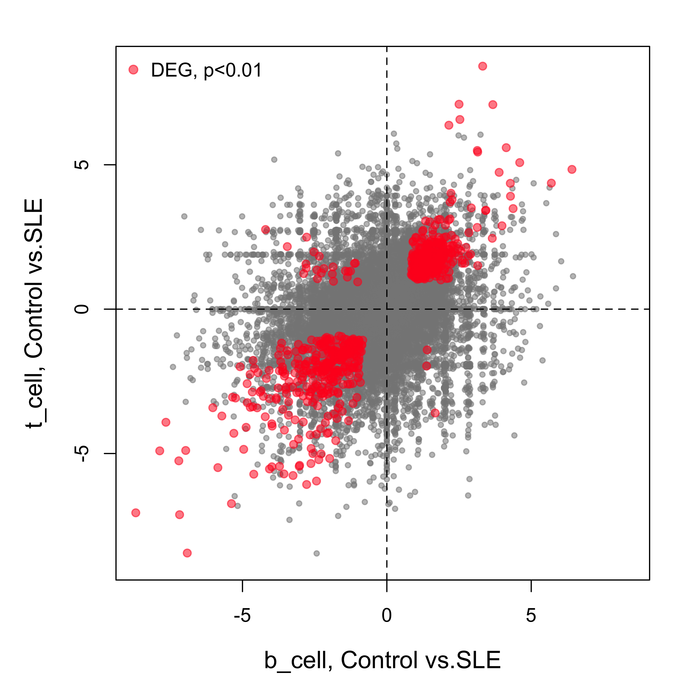
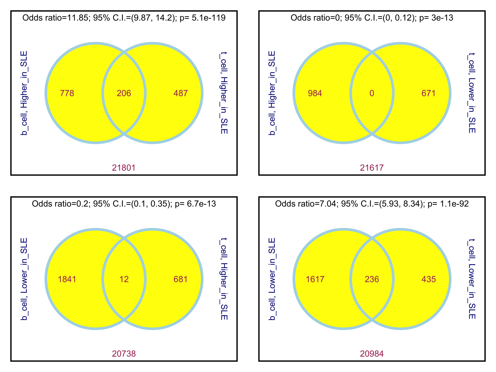
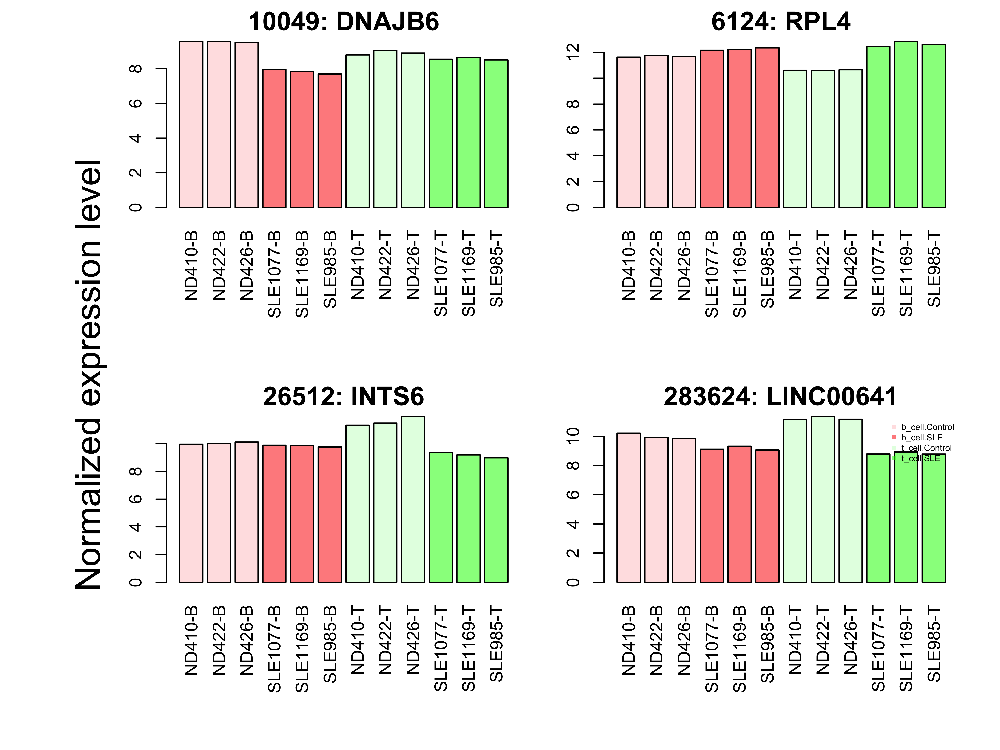
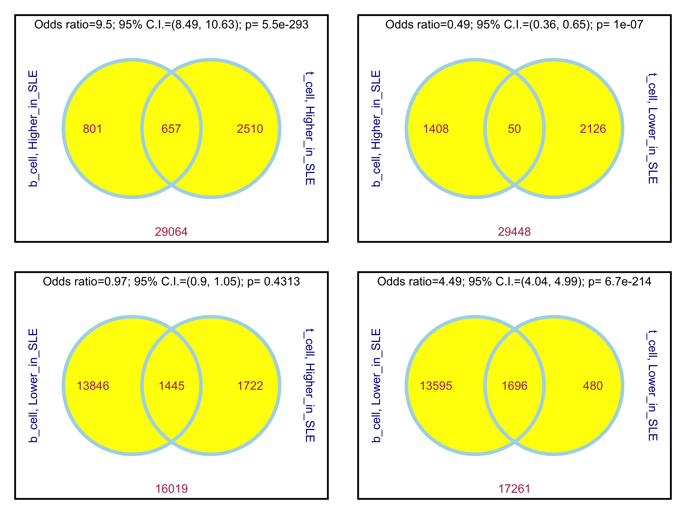
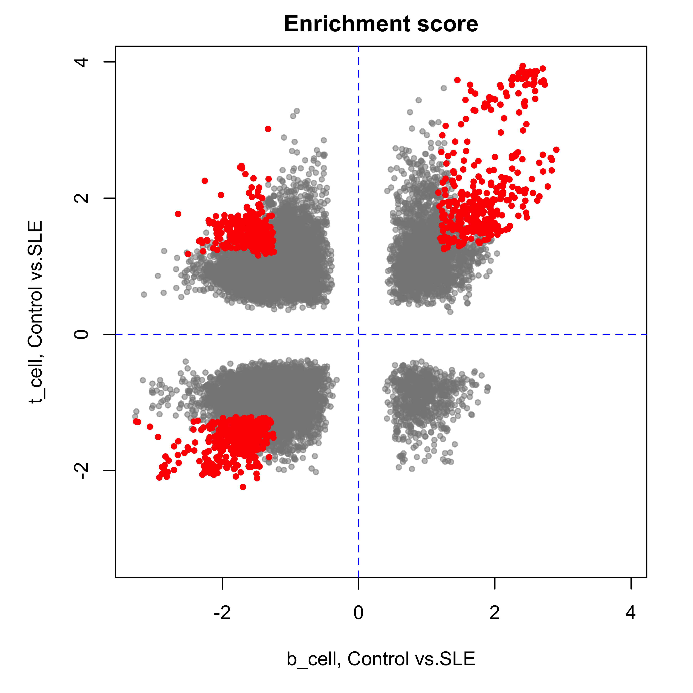
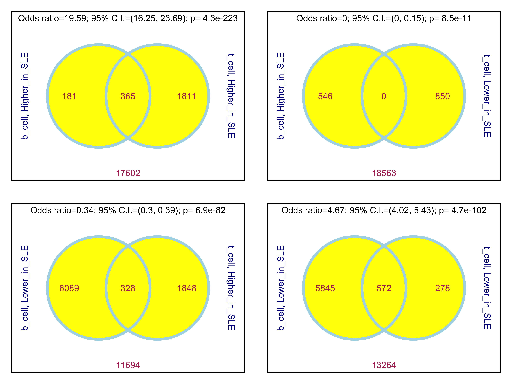
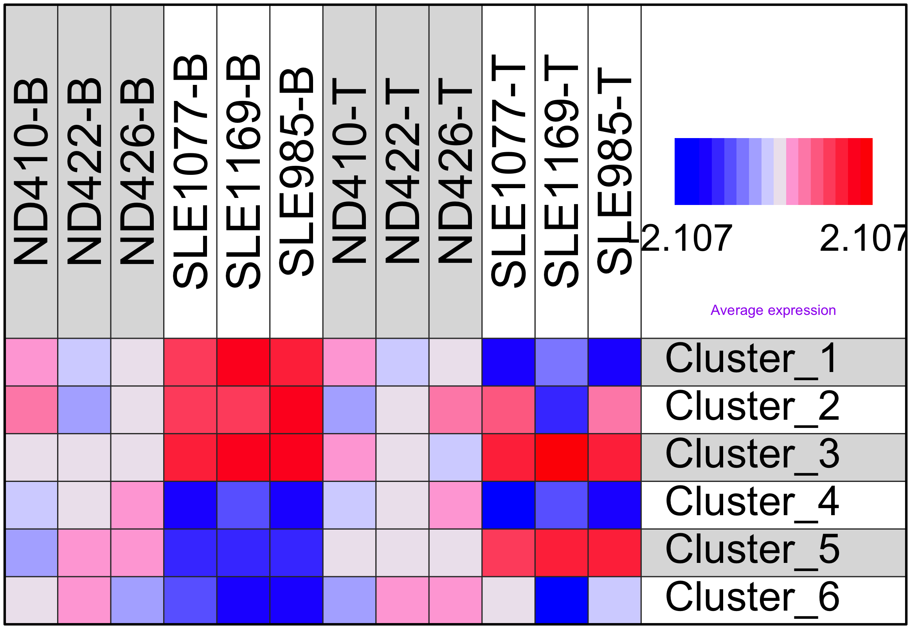
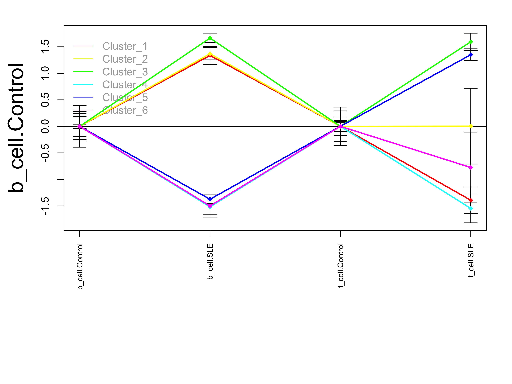

Introduction: This analysis is based on the outputs of pairwise comparisons of differential gene expression generated by this template. It uses results from 2 pairwise comparisons of 2 sample groups vs. their corresponding control groups and compares how these 2 sample groups are different from each other in terms of their sample-control differences (delta-delta). An example of such analysis is the different responses of 2 cell types to the treatment of the same drug. This analysis is focused on the overlapping of differentially expression at both gene and gene set levels.
Transcriptome in immune cells of control-patient samples
Rna-seq data was generated from of 2 types of immune cells of 3 controls and 3 patients. Raw data was processed to get gene-level read counts. Pairwise comparisons were performed between controls and patients in each immune cell.
This is a demo.
This report compares the results of the following pairwise comparisons.
Table 1. Information about both comparisons, including comparison name, group names, group size, total number of genes, etc. Click links below to view details about individual comparisons.
| Name | Group1 | Group2 | Num1 | Num2 | Num_Gene | Test | Paired | DEG_Higher | DEG_Lower |
|---|---|---|---|---|---|---|---|---|---|
| b_cell | Control | SLE | 3 | 3 | 23272 | EdgeR | FALSE | 984 | 1853 |
| t_cell | Control | SLE | 3 | 3 | 23272 | EdgeR | FALSE | 693 | 671 |
Both comparisons reported the log ratio of 2 group means for each gene. The global agreement of log ratios of all genes indicates how much the results of these 2 comparisons are similar to or different from each other. Full table of gene-level statistics side-by-side is here.

Figure 1. This plot shows the global correlation (correlation coefficient = 0.24) between the 2 pairwise comparisons: b_cell and t_cell. Genes having p values less than 0.01 from both comparisons are highlighted.
Both comparisons identified DEGs between 2 compared groups. Overlapped DEGs identified by both comparisons are worthy of a closer look.
Table 2. Number of DEGs reported by both comparisons. The last 2 columns list the number of DEGs identified by both comparisons using their own DEG selection criteria.
| Total_gene | P < 0.01 | b_cell::G2 > G1 | t_cell::G2 < G1 | |
|---|---|---|---|---|
| b_cell | 23272 | 3235 | 984 | 1853 |
| t_cell | 23272 | 2130 | 693 | 671 |

Figure 2. Overlapping of DEGs. All combinations of differential expression towards opposite directions are plotted and Fisher’s exact test is performed to evaluate the significance of overlapping or lack of overlapping. Click links below to view overlapping DEGs:
2-way ANOVA analysis is performed to identify genes responding to SLE differently in different Cell. The analysis reported 2 or 3 p values, corresponding to the effect of SLE, Cell, as well as their interaction; if required. The analysis identified 3139 significant genes with interaction p values less than 0.01. The ANOVA results are summarized in a table here.

Figure 3. Examples: the top 4 genes having the most significant interactive p value, among the genes with significant differential expression in at least one of the two pairwise comparisons.
Each 2-group comparison performs gene set over-representation analysis (ORA) that identifies gene sets over-represented with differentially expressed genes. The results of ORA of both 2-group comparisons are summarized and compared here. The ORA of each gene set reports an odds ratio and p value. These statistics from both comparisons were combined and listed side-by-side, as well as the difference of their odds ratios and ratio of their p values (p set to 0.5 when not available), in this table here
Table 3. Gene sets were broken down into subgroups by their sources. Click on the numbers of over-represented gene sets to see a full list.
| b_cell, Higher_in_Control | b_cell, Higher_in_SLE | t_cell, Higher_in_Control | t_cell, Higher_in_SLE | |
|---|---|---|---|---|
| BioSystems | 438 | 3212 | 921 | 479 |
| KEGG | 40 | 319 | 49 | 119 |
| MSigDb | 857 | 4125 | 1565 | 686 |
| OMIM | 0 | 1 | 0 | 0 |
| PubTator | 123 | 7634 | 632 | 892 |

Figure 5. The overlapping of over-represented gene sets from both comparisons. Click links below to view tables of overlapping significant gene sets:
Each 2-group comparison performs gene set enrichment analysis (GSEA) on genes ranked by their differential expression. The results of GSEA of both 2-group comparisons are summarized and compared here. The GSEA of each gene set reports an enrichment score and p value. These statistics from both comparisons were combined and listed side-by-side in this table here
Table 4. Gene sets were broken down into subgroups by collections. Click on the numbers of enriched gene sets to see a full list.
| b_cell, Higher_in_Control | b_cell, Higher_in_SLE | t_cell, Higher_in_Control | t_cell, Higher_in_SLE | |
|---|---|---|---|---|
| C0_Hallmark | 2 | 37 | 12 | 3 |
| C1_Positional | 13 | 26 | 28 | 10 |
| C2_BioCarta_Pathways | 1 | 68 | 14 | 2 |
| C2_Chemical_and_genetic_perturbations | 36 | 1356 | 411 | 122 |
| C3_MicroRNA_targets | 0 | 51 | 3 | 5 |
| C3_TF_targets | 4 | 284 | 12 | 89 |
| C4_Cancer_gene_neighborhoods | 42 | 86 | 170 | 17 |
| C4_Cancer_modules | 10 | 176 | 78 | 18 |
| C6_Oncogenic_signatures | 2 | 116 | 9 | 17 |
| C7_Immunologic_signatures | 58 | 922 | 432 | 52 |
| GO_BP | 145 | 2065 | 437 | 239 |
| GO_CC | 67 | 159 | 120 | 34 |
| GO_MF | 44 | 359 | 87 | 71 |
| KEGG_compound | 4 | 126 | 41 | 47 |
| KEGG_enzyme | 1 | 1 | 2 | 3 |
| KEGG_module | 11 | 13 | 24 | 3 |
| KEGG_pathway | 9 | 161 | 27 | 25 |
| KEGG_reaction | 2 | 35 | 24 | 23 |
| OMIM_gene | 1 | 2 | 2 | 2 |
| REACTOME | 92 | 283 | 230 | 63 |
| WikiPathways | 2 | 91 | 13 | 5 |

Figure 6. Nominal enrichment scores from both comparisons. Each dot represents a gene set. Gene sets with p values less than 0.01 from both comparisons are highlighted.

Figure 7. The overlapping of over-represented gene sets from both comparisons. Click links to view tables of overlapping significant gene sets from GSEA:
The top 1000 genes with significant ANOVA p values (p <= 0.01) were used as seeds to perform a gene-gene clustering analysis and 6 clusters were identified. ORA was performed on the clusters to identify their functional association (see table below);
| ID | Size | b_cell, Control | b_cell, SLE | t_cell, Control | t_cell, SLE | Gene_set |
|---|---|---|---|---|---|---|
| Cluster_1 | 671 | 0 | 1.3368 | 0 | -1.3933 | 974 |
| Cluster_2 | 118 | 0 | 1.3693 | 0 | 0.0033 | 2487 |
| Cluster_3 | 1000 | 0 | 1.6649 | 0 | 1.5938 | 2514 |
| Cluster_4 | 535 | 0 | -1.5190 | 0 | -1.5478 | 2878 |
| Cluster_5 | 446 | 0 | -1.3751 | 0 | 1.3500 | 3785 |
| Cluster_6 | 603 | 0 | -1.5017 | 0 | -0.7758 | 10905 |

Figure 8. This plot shows below the average expression levels of each cluster. Data was normalized before the analysis, so the mean of the control groups was zero and the standard deviation of all samples of each gene was 1.0. Values indicate number of standard deviation from mean of relative control group.

Figure 9. This plot summarizes the group means and standard errors of all clusters.
Check out the RoCA home page for more information.
To reproduce this report:
Find the data analysis template you want to use and an example of its pairing YAML file here and download the YAML example to your working directory
To generate a new report using your own input data and parameter, edit the following items in the YAML file:
- _output_ : where you want to put the output files
- _home_ : the URL if you have a home page for your project
- _analyst_ : your name
- _description_ : background information about your project, analysis, etc.
- _input_ : where are your input data, read instruction for preparing them
- _parameter_ : parameters for this analysis; read instruction about how to prepare input dataif (!require(devtools)) { install.packages('devtools'); require(devtools); }
if (!require(RCurl)) { install.packages('RCurl'); require(RCurl); }
if (!require(RoCA)) { install_github('zhezhangsh/RoCAR'); require(RoCA); }
CreateReport(filename.yaml); # filename.yaml is the YAML file you just downloaded and edited for your analysisIf there is no complaint, go to the output folder and open the index.html file to view report.
## R version 3.3.3 (2017-03-06)
## Platform: x86_64-apple-darwin13.4.0 (64-bit)
## Running under: OS X Yosemite 10.10.5
##
## locale:
## [1] en_US.UTF-8/en_US.UTF-8/en_US.UTF-8/C/en_US.UTF-8/en_US.UTF-8
##
## attached base packages:
## [1] stats graphics grDevices utils datasets methods base
##
## other attached packages:
## [1] DEGandMore_0.0.0.9000 snow_0.4-2 rchive_0.0.0.9000
## [4] gplots_3.0.1 MASS_7.3-45 htmlwidgets_0.9
## [7] DT_0.2 awsomics_0.0.0.9000 yaml_2.1.16
## [10] rmarkdown_1.9.8 knitr_1.18 RoCA_0.0.0.9000
## [13] RCurl_1.95-4.9 bitops_1.0-6 devtools_1.13.4
##
## loaded via a namespace (and not attached):
## [1] Rcpp_0.12.14 magrittr_1.5 highr_0.6
## [4] stringr_1.2.0 caTools_1.17.1 tools_3.3.3
## [7] parallel_3.3.3 KernSmooth_2.23-15 withr_2.1.1
## [10] htmltools_0.3.6 gtools_3.5.0 rprojroot_1.3-2
## [13] digest_0.6.13 memoise_1.1.0 evaluate_0.10.1
## [16] gdata_2.18.0 stringi_1.1.6 backports_1.1.2
## [19] jsonlite_1.5END OF DOCUMENT